应用层的目的：应用层对应用程序的通信提供服务。
应用层协议的定义：
1、应用进程交换的报文类型，请求还是响应。
2、各种保温类型语法，如保温中的各个字段机器详细描述。
3、字段的语义，即包含在字段中的信息的含义。
4、进程何时、如何发送报文，以及报文进行相应的规则。
应用层功能：
1、文件传输，访问和管理。
2、电子邮件。
3、虚拟终端。
4、查询服务和远程作业登录。
应用层重要协议：
FTP、SMTP、POP3、HTTP、DNS。
客户/服务器（CS）模型：
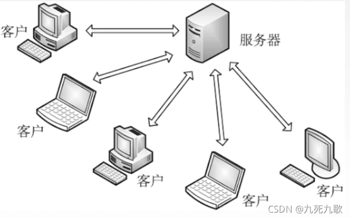
服务器：提供计算服务的设备。服务器的特点是：永久提供服务，二十四小时不间断；永久型访问地址/域名。
客户机：请求计算服务的主机，客户机的特点是：与服务器通信，使用服务器提供的额服务。间隙性接入网络，不必像服务器一样不能宕机。客户机可能使用动态IP地址，而不是像服务器一样的永久地址；不能与其他客户机进行直接通信。
该模型用于：WEB、文件传输FTP、远程登录、电子邮件。
P2P模型：
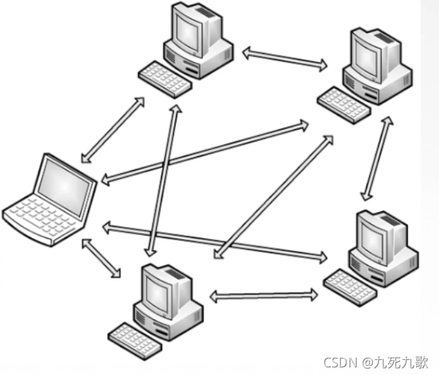
P2P模型中不存在永远在线的服务器。每个主机既可以提供服务，也可以请求服务。
任意端系统/节点之间可以直接通信。节点可以间隙性接入网络，随时加入，随时退出。
节点可能变成IP地址。
可扩展性好，CS模型中如果大量客户机涌入网络，服务器可能就炸了，而P2P模型中，大量主机涌入网络就相当于服务器多了，客户端也多了，不会有太大影响的。
网络健壮性好，一个节点坏掉了，对整个的影响并不大，重新选择拓扑结果就好，而对于CS如果服务器崩了，就不能服务了。
根据IP地址寻址去上网站，这样也可以，但是太复杂，因为我们可以用域名来代替IP地址。而DNS系统就是实现了域名的IP地址的转换。
我们在登录网址的时候，我们先访问DNS服务器，让可以得到主机的IP地址，就通过IP地址进行访问，得到王烨信息。网站出现问题，DNS服务器出现了问题，也可能是王烨服务器出现了问题。
比如www.baidu.com，叫做域名，不区分大小写，英文逗号隔开，称为标号，理论上乜咯标号不能超过63个字符，但是一般情况为了记忆不能超过12个字符。
这些标号从左到右级别越来越高，比如www.baidu.com，com是顶级域名，baidu是二级域名，www是三级域名。
域名分类：
顶级域名：
国家顶级域名：cn、us、uk。
通用顶级域名：com、net、org、gov、int、aero、museum、travel。
基础结构域名/反向域名：arpa。
二级域名：
类别域名：ac、com、edu、gov、net、org。
行政域名：各省、自治区、直辖市bj、js。
自己注册的二级域名：baidu、mi。
三级域名：
四级域名：
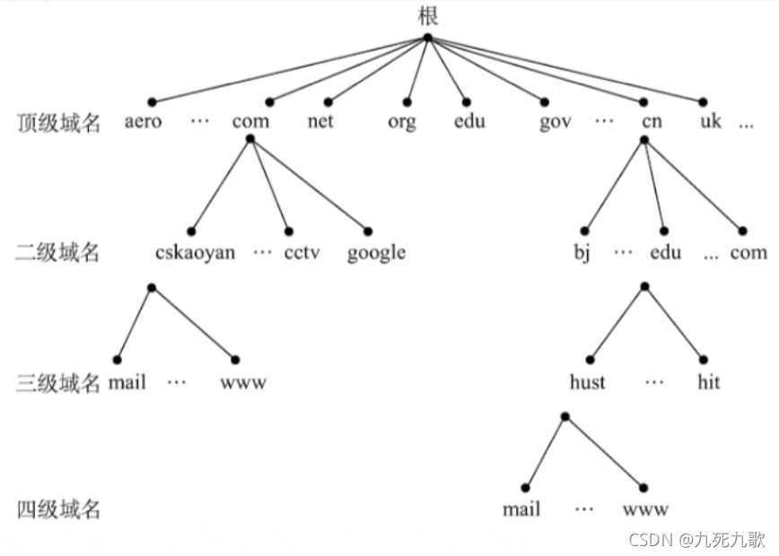
域名服务器的分类：
根据域名服务器：根域名服务器知道所有顶级域名服务器的IP地址。当本地域名服务器无法得到域名的解析，就要向根域名服务器求救，比如我们www.baidu.com，而本地域名服务器未能解析，递交给了根域名服务器一看，顶级域名是com，就查询com顶级域名服务器的IP地址，然后告诉本地域名服务器这个IP地址，或者继续往下查询，去com顶级域名服务器，再去下面的权限域名服务器，进行详细查询，直到查询出这个IP地址。这两种方法类似于递归。
顶级域名服务器：顶级域名服务器负责管理该顶级域名服务器注册的所有二级域名。
权限域名服务器：负责一个区的域名服务器，所谓的区，就是一堆DNS服务器实际管辖范围的一个区分、
本地域名服务器：当一个主机发出DNS查询请求的时候，这个查询请求报文就发给本地域名服务器，它距离主机比较近，一般不超过姬哥路由器的距离，当一台主机，他要查的另一台主机是和他属于同一本地SP，也就是属于同一个因特网提供者所提供的范围内的时候，本地域名服务器就可以立刻将所查询到的主机名转换成他的IP地址。而无需循环其他的服务器。是的DNS查询到的过程更加简单。
递归查询：主机先请求本地域名服务器，如果无法解析，本地域名服务器向根域名服务器求助，根域名服务器无法解析则请求顶级域名服务器，顶级域名服务器无法解析则请求权限域名服务器，。最后返回信息时也是权限返给顶级返回给根，根返回给本地，本地返回被本机。
迭代查询：主机先请求本地域名服务器，如果无法解析，本地域名服务器向根域名服务器求助，根域名服务器无法解析，向主机返回对应顶级域名服务器IP，然后本地域名服务器查询顶级域名服务器如果顶级域名服务器也无法解析，告诉主机对应权限域名服务器的IP地址，本地无法查询。
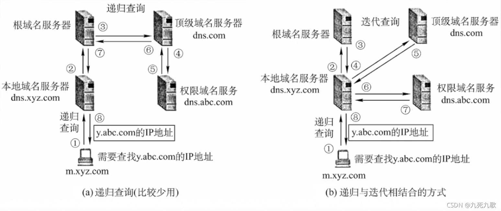
从上图可知，我们可以看到不管递归还是迭代，这个域名解析的过程都是极为复杂的，因为oe闷在本地域名服务器中引入了高速缓存，高速缓存可以用来存放最近查过的域名，以及从哪儿获取域名映射信息的记录。然然域名IP硬件设施会变化的，所以这个告诉缓存也要定时更新。不仅是本地域名服务器，主机也需要告诉缓存，因此很多主机一开机就会从本地域名服务器中下载高速缓存。
所以查询域名的过程中一般先查主机的告诉缓存，再查本地域名服务器的告诉缓存，再使用递归或迭代查询。
常见的文件传输协议有：文件传送协议FTP(File Transfer Protocol)和简单文件传送协议TFTP（Traivaial File Transfer Protocol）。
TFTP是一种易于时间的文件传送协议，适用于UDP环境。
FTP协议提供了不同种类主机系统（硬件体系等可以不同）之间的文件传输能力。FTP是一种拷贝，即上传和下载。
FTP是基于客户/服务器（CS）的协议。用户通过一个客户机程序连接到远程计算机上运行的服务器程序。
依照FTP协议提供的服务，进行文件传送的计算机就是FTP服务器。连接FTP服务器，遵循FTP协议与服务器传送文件的电脑就是FTP客户端。
登陆：FTP地址、用户名、密码。互联网中有很大一部分FTP服务器称为“匿名”（Anonymous）FTP服务器。这类服务器的目的是想公众提供文件拷贝服务，不要求用户实现在该服务器上登记注册，也不用获取FTP服务器的授权。
Anonymous（匿名文件传输）能够使用户与远程主机建立连接并以匿名身份从远程主机上拷贝文件，而不必是该主机的注册用户。用户使用特殊的用户名“anoynymous”登陆FTP服务器，就可以访问远程主机上公开的文件。
FTP不允许一点疏忽，因此他使用的TCP协议来实现可靠传输。
FTP服务器的进程：
FTP进程：
一个主进程
n个从属进程，工作流程是首先要打开一个熟知端口，也就是FTP服务器实现文件传输的熟知端口，端口号是21，等待客户进程发送链接请求并成功链接上，便进行数据传送。然后就可以启动n个从属进行，乜咯从属进程都对应一个客户端。
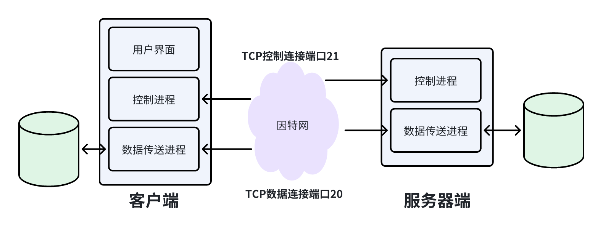
控制进程和数据柴松进程都是从属进程。只要客户端和服务器建立会话，控制连接便时钟保持。但数据连接则是根据文件是否传送完毕来决定是否断开。
控制连接使用端口号永远都是21，而数据连接是否使用20，与传输模式有关，主动方式使用TCP端口20端口，被动方式由服务器和客户端自行协商决定。
FTP传输模式
文本模式：ASCI模式，以文本序列传输数据；
二进制模式：Binary模式，以二进制序列传输数据。
电子邮件分为两部分：信封部分，内容部分。
信封部分：信封上最主要的信息就是收件人邮箱。
内容部分：
首部：邮件的收件人和主题。
主题：邮件的内容。
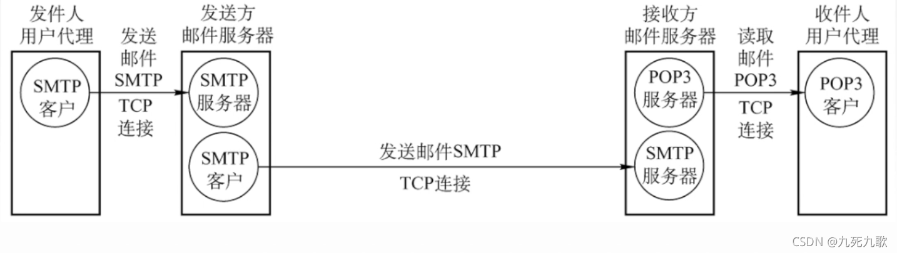
用户代理：即电子邮件客户端软件，是电脑上的一个应用程序。他一般有四个功能，撰写，也就是编辑邮件、显示、也就是写完信要显示在屏幕上，包括发送和接收的、处理，报，uo发送和接收右键、通信，也就是可以李立勇邮件的发送协议发送到指定服务器。
邮件服务器：主要功能有两个，发送和接收邮件，向发送人报告邮件传送结果。邮件服务器既可以作为服务器，还可以作为客户端，比如别的邮件服务器给这个邮件服务器发送消息，那这个邮件服务器就变成了客户端。
发送邮件一般使用SMTP协议，接收邮件使用POP3和IMAP协议。
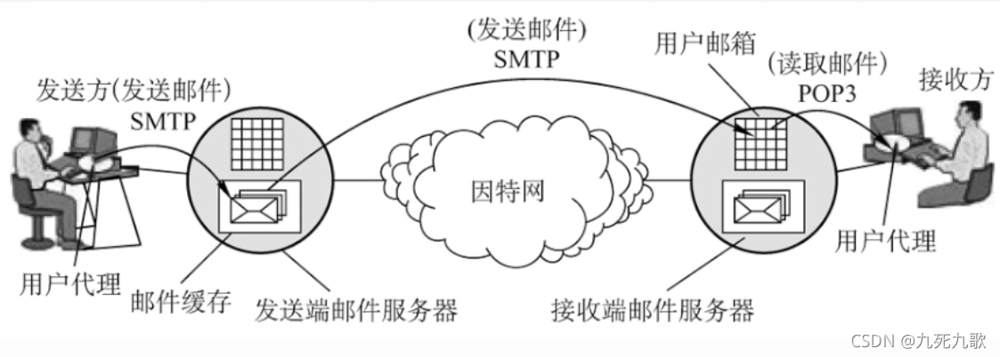
简单邮件传送协议SMTP：
SMTP规定了两个相互通信的SMTP进程之间应该如何交换信息。
这两个进程分别是负责发送邮件的SMTP客户和负责接收邮件的SMTP服务器。
SMTP规定了14条命令（几个字母）和21种应答信息（三位数字代码 + 简单文字说明）。
SMTP协议使用了TCP连接，使用的端口号是25，使用CS模式。
SMTP通信要经历三个阶段：链接建立、邮件发送、连接释放。
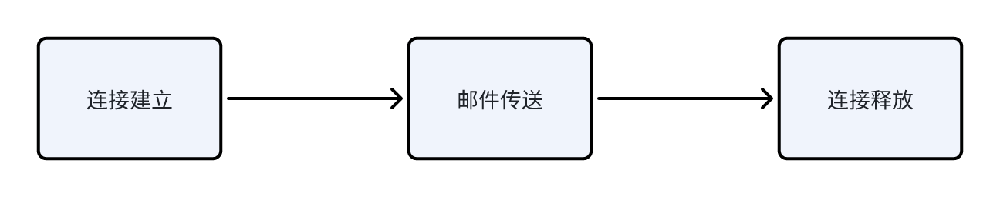
连接建立：
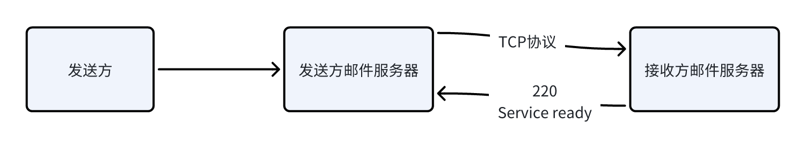
SMTP服务器如果有能力接收邮件，回到”250 OK“ 否则，回答”421 Service not avalible“。
邮件发送：
A: MAIL FROM 114514@qq.com
B: 250 OK / 451(452 500)(SMTP服务器是否已经准备好接收邮件)
A: RCPT TO: 1919810@163.com(可以有多个RCPT命令)
B: 250 OK / 550 No much user here()告知SMTP服务器是否有这个用户。
A: DATA(要开始传输邮件的内容了)
B: 354 start mail input; end with
. (SMTP服务器同意传输) A: hng heng hen aaaaaaaaaaaaaaaaaaaaaaaaaaaa~ aaaaaaaaaa~(开始传输邮件内容)
B: 250 OK(接收结束)
连接释放：
邮件发送完，SMTP客户发送QUIT命令，SMTP服务器返回”221“，表示同意释放TCP连接。
SMTP缺点：
SMTP不能传送可执行文件或其他二进制对象。
SMTP仅限于传送7位ASCII码，不能传送其他非英语国家的文字。
SMTP服务器会拒绝超过一定长度的邮件。
为了弥补以上缺点，可以使用因特网邮件扩充MIME。
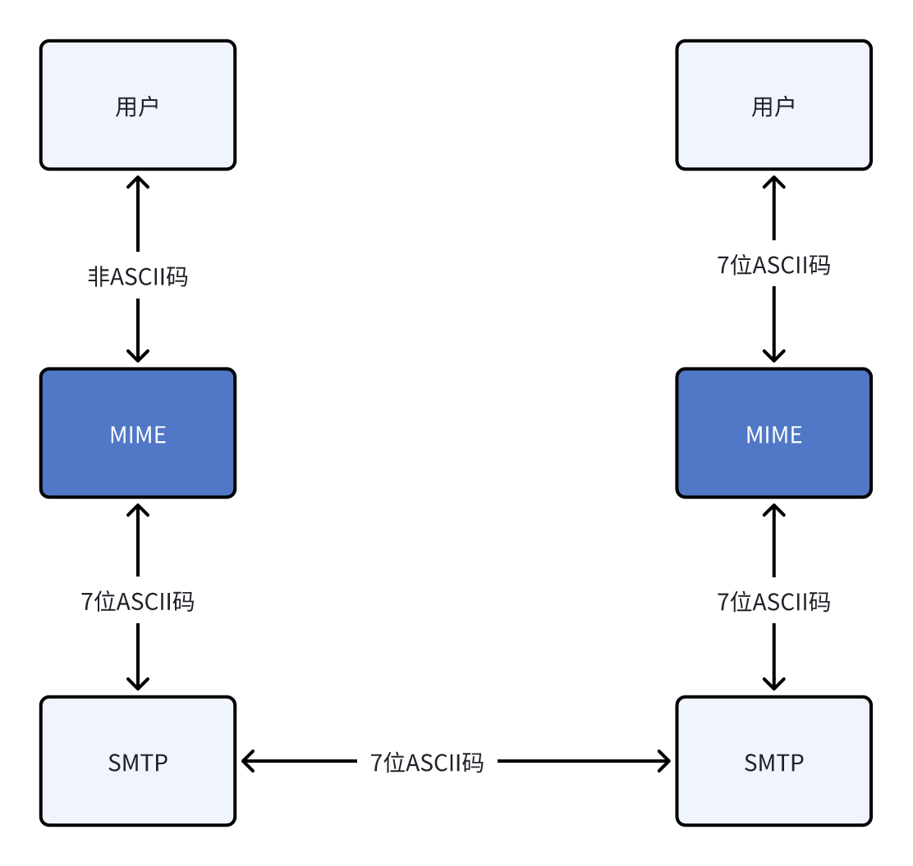
MIME使电子邮件系统可以支持声音、图像、视频、多种国家语言等，是传输内容变得更加丰富多彩。
POP3协议使用的是TCP连接，使用短裤号是110，使用CS模式。
POP3的工作方式有下砸并保留（服务器）和下载并删除。
IMAP协议比POP协议复杂。当用户主机上的IMAP客户程序打开IMAP服务器的邮件时，用户可以看到邮件的首部，如果用户需要打开某个邮件，该邮件才上传到用户的计算机上。
IMAP可以让用户在不同的地方使用不同的计算机随机上网阅读处理邮件，还允许只读邮件中的某一个部分（先看正文，有wifi的时候再下载附件）。
不用下载软件，直接在网页上操作。
从发送方用户代理到用户邮件服务器使用的是http协议。从发送方邮件服务器到接收方邮件服务器仍然使用SMTP协议，从接收方邮件服务器到接收方用户带来使用的都是http协议。
万维网WWW（Workd Wide Web）是一个大规模的、联机式的信息储藏所/资料空间，是无数个网络站点和网页的集合。
同一定位符URL：使用同一定位符URL来定位万维网中的资源。
URL格式是 <协议（http https ftp）>://<主机（域名或ip地址）>:<端口（默认端口可忽略）>/<路径>
URL是不区分大小写的。
万维网一客户/服务器方式工作，用户使用的浏览器就是客户端，万维网文档所主流的主机运行服务程序。
万维网使用超文本标记语言（HTML）使得万维网页面设计者可以很方便的从一个界面跳转到另外一个界面，并能够在自己的屏幕上显示出来。
HTTP协议定义了浏览器（万维网客户端进程）怎样向万维网请求超文本呢，以及服务端怎么把超文本传给浏览器？
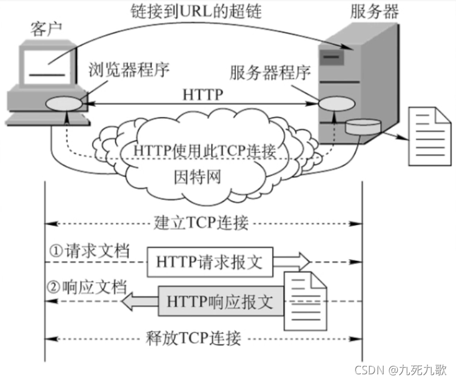
传输过程：
浏览器分析URL。
浏览器向DNS请求解析IP地址。
DNS解析出IP地址。
浏览器与服务器建立TCP连接。
浏览器发出取文件命令。
服务器响应。
释放TCP连接。
浏览器显示。
HTTP协议特点：
无状态性：HTTP协议是无状态的，就是你第一次登录这个网站和第二次登录这个网站，服务的响应是一样的。
cookie：实际工作中，一些万维网站点常常希望能够识别用户。通过cookie来在客户端存储用户的信息，在请求的时候将cookie传送给服务器端。
HTTP连接方式：HTTP采用TCP作为运输层协议，但HTTP协议本身是无连接的（通信双方在交换HTTP报文之前不需要先建立HTTP连接）。
HTTP的连接方式分为持久连接（Keep-alive）和非持久连接（Close）。另外持久连接还细分成了非流水线和流水线。
非持久连接：
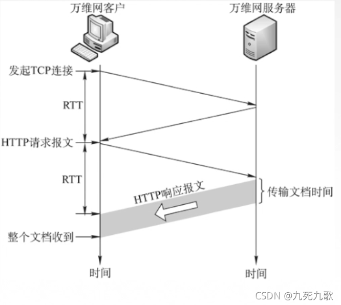
持久连接：
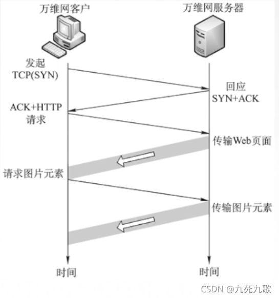
非持久连接每次请求资源都要进行三次握手。
持久连接不至于。请求完了之后不会像非持久挥手，请求新的资源不用需要重新三次握手。上图中这个持久连接是非流水线式的，发了请求服务器返回响应，收到了响应之后才能再次请求。而流水线有点像SR、，可以让TCP连接空闲时间比较少，提高下载效率。
HTTP协议报文结构：
首先http报文分为请求报文和响应报文。 HTTP报文是面向文本的，因此在报文中的每个字段都是一些ASCII码串。
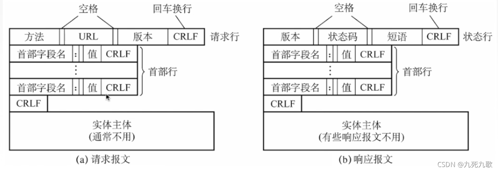
请求报文：
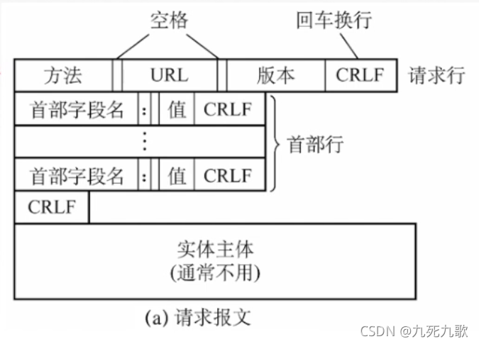
方法：即删除或获取还是其他什么操作。
版本：使用什么版本的http协议。
首部行：说明浏览器、服务器和报文主题的一些信息。
1GET /index.htm1 HTTP/1.12Host: www.test.edu.cn3Connection: Close4Cookie: 123456GET是指获取资源的方式是GRT请求、index.html是获取的资源、HTTP1.1是版本号、Host是域名，Connection是用何种连接方式、Close是非持久化连接、Cookie。
响应报文：
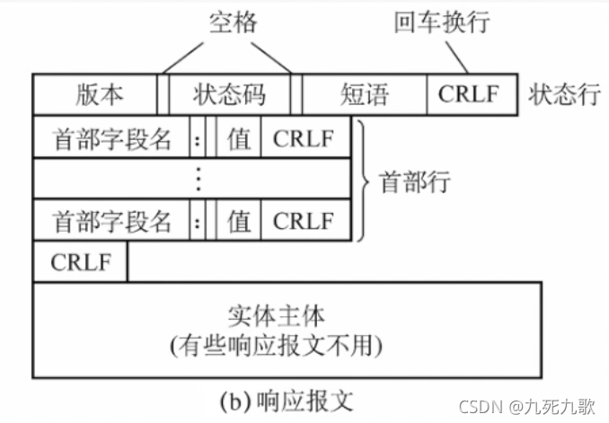
版本：同请求报文。
状态码和短语：数字和短语组合，例如202 Accepted（访问成功）、404 Not Found、301 Moved Permanently（网页转移地址）
1xx表示通知信息。
2xx表示成功。
3xx表示重定向，如果完成请求还必须要采取进一步的行到。
4xx表示客户的差错，如果请求中有错误的语法或不能完成。
5xx表示服务器内部出错，如服务无效无法完成请求。